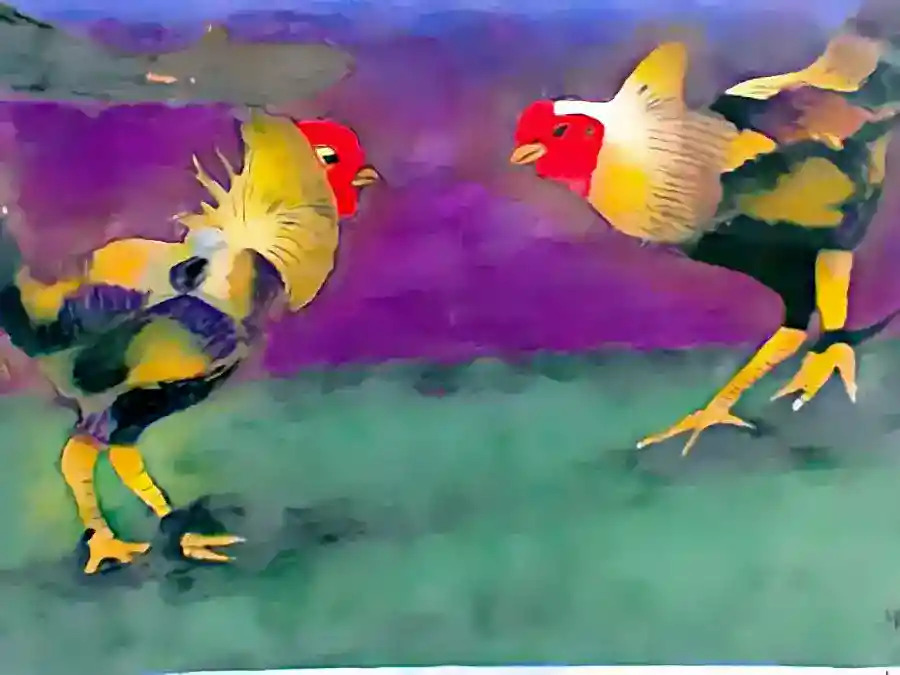
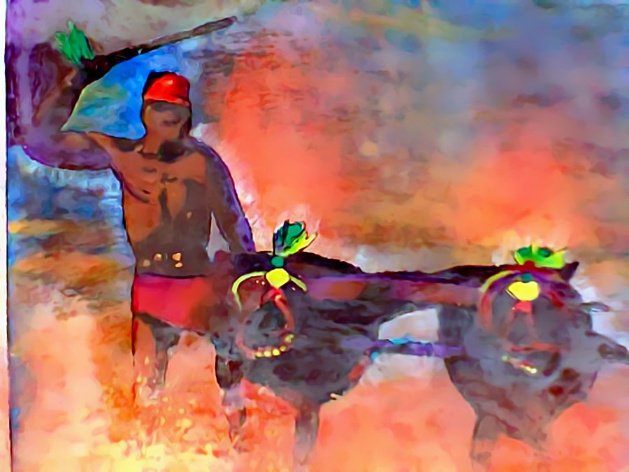
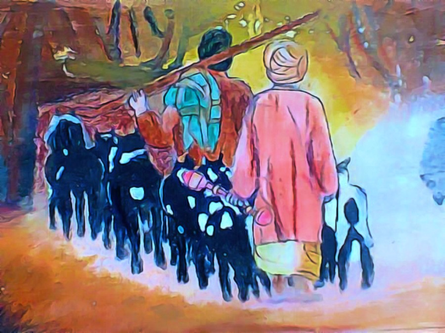
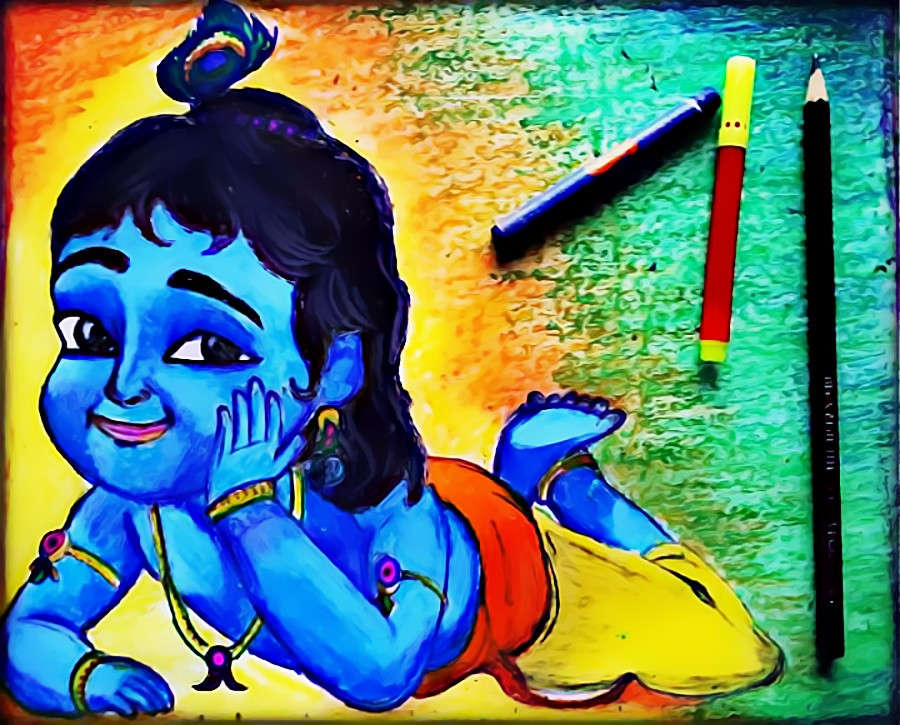

Hobbies
Check Out Some of My Paintings.
Painting is what I do in my free time. It's my hobby and passion. I've been certified by Karnataka Secondary Examination board for clearing Drawing grade exams with First Class marks. I have also got awards in many drawing competitions.
Follow my blog for my entire collection https://thepatronusart.wordpress.com




